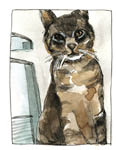

16
İşte yazdığım not:
Sevgili Komşum, Kedim Tibby’ye mama verdiğiniz için teşekkür ederim. Ne yediğini merak ediyorum. Evde yemek konusunda kılı kırk yarıyor. Bir de, beş hafta boyunca sizinle kaldı mı acaba?” (Tibby’nin şirin bir fotoğrafı.)
Lütfen beni arayın. (Telefon numarası.)
Caroline
Wendy kaşlarını çattı, uzun bir sessizliğin ardından mektupta öfkeli bir ton kullandığımı söyledi.
“Ama öfkeliyim,” dedim.
Baştan başlamayı kabul ettim.
Sevgili Komşum,
Belki bu yaz kaybolan kedim Tibby’yi hatırlarsınız. Posta kutunuza onunla ilgili bir el ilanı bırakmıştım.
Wendy: O cümleyi çıkar. Suçlayıcı ve saldırgan geliyor kulağa.
O cümleyi çıkardık.
Neyse ki Tibby beş hafta sonra sapasağlam eve döndü. Ancak artık burada yemek yemiyor. GPS takip cihazı sonuçları, sizin evin civarında takıldığını gösteriyor. Belki yemeği de oralarda yiyordur.
Wendy: GPS’ten bahsedemezsin. Birilerinin peşine düşen bir sapık gibi oluyorsun.
Ben: Sapık filan değilim! Evcil hayvan sahibiyim!
Şiddetli bir çarpışmanın ardından cümleyi notta bırakmaya karar verdik.
Onunla siz ilgileniyorsanız, gerçekten çok teşekkür ederim. Kedinizin mamasını çalıyorsa, o zaman özür dilerim. Ama hangisi olursa olsun, sevdiği mamayı öğrenmek isterim, böylece onu burada, evde doyurabilirim. Tibby’yi mavi tasmasından ve tasmaya takılı, ışıkları yanıp sönen GPS cihazından tanıyabilirsiniz.
Sevgili Komsum,
Belki bu yaz kaybolan kedim Tibby’yi hatırlarsınız.
Neyse ki Tibby bes hafta sonra sapasaglam eve döndü. Ancak artık burada yemek yemiyor. GPS takip cihazı sonuçları, sizin evin civarında takıldıgını gösteriyor. Belki yemegi de oralarda yiyordur.
Onunla siz ilgileniyorsanız gerçekten çok tesekkür ederim. Kedinizin mamasını çalıyorsa, o zaman özür dilerim. Ama hangisi olursa olsun, sevdigi mamayı ögrenmek isterim, böylece onu burada, evde doyurabilirim.
Bu konuyla ilgili herhangi bir bilginiz varsa lütfen beni arar mısınız?
Komsunuz
Caroline Paul

Nihayet son iki cümleyi çıkardık.
Bu konuyla ilgili herhangi bir bilginiz varsa lütfen beni arar mısınız?
Caroline Paul (telefon numarası.)
“Mükemmel,” dedim. “Katı ama dostça.”
Wendy şüpheliydi. Artık kartlarımı açmam gerektiğini söyledim ona. Bu konuda elimde kanıta yakın bir şeyler olduğunu ifade etmemin vakti gelmişti. Şaka yapmıyordum. Kaçık, sapık takipçinin biri değildim. GPS cihazım vardı.
Wendy, “Aslına bakarsan, kaçık bir takipçiyi andırıyorsun,” diye cevap verdi.
“Güzel bir yazı karakteri seç,” dedim.
O öğleden sonra, ilanı Şüpheli Bölge’deki bütün evlerin posta kutularına bıraktık.
“Çok geçmeden biri arayacak,” diye şakıdım. “Bekle de gör!”